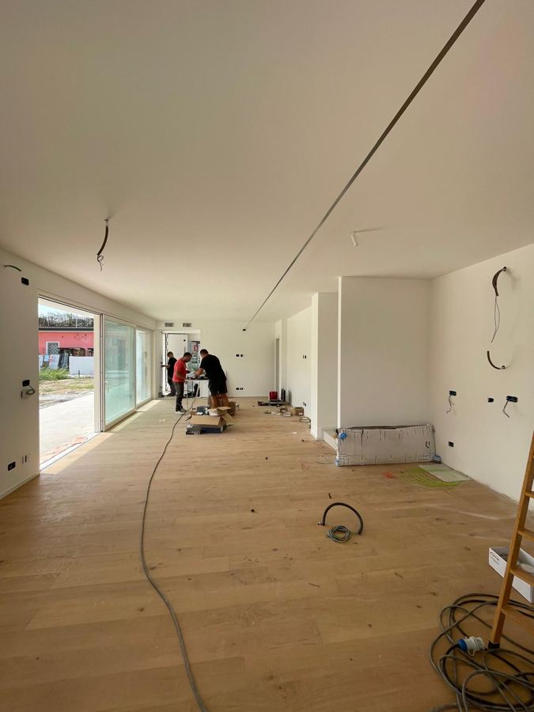
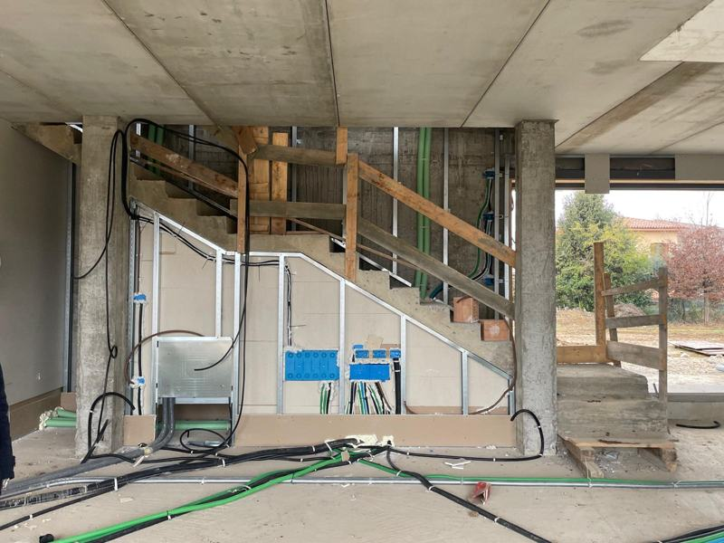
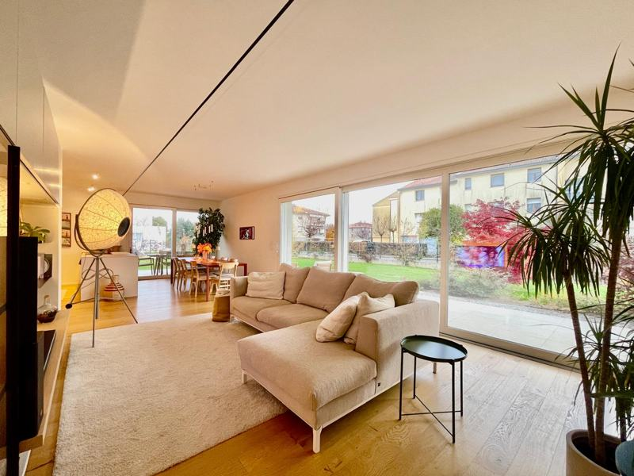
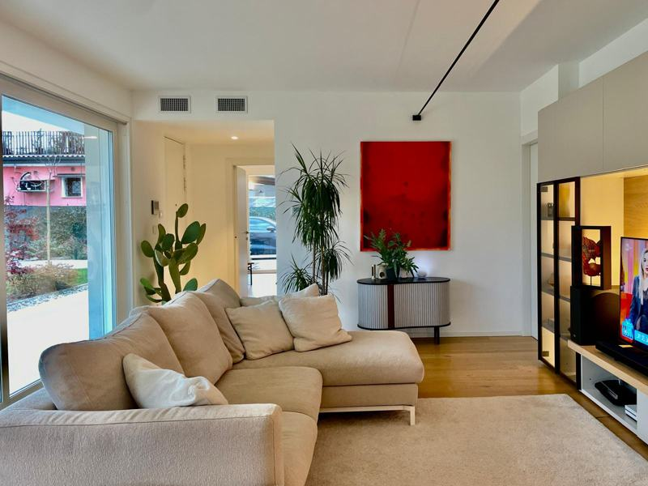
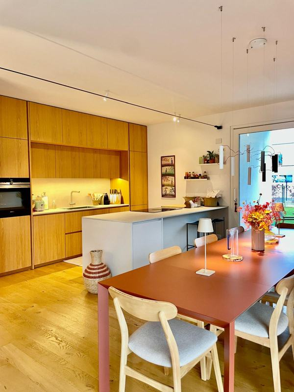
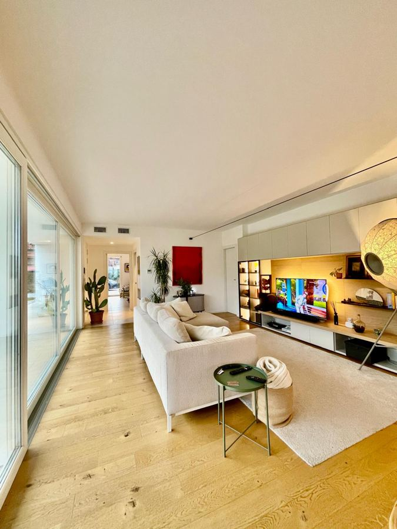
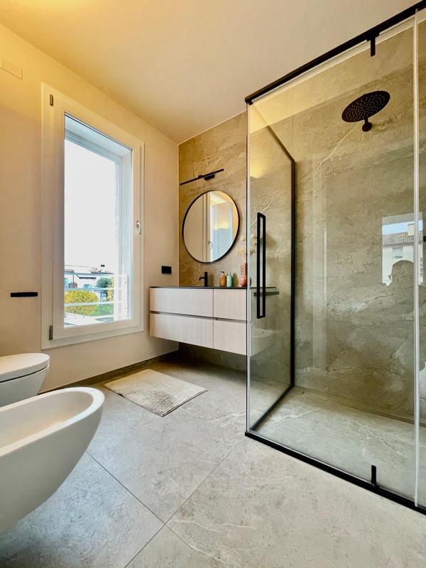

Il cliente ha acquistato questa villa in città quando era ancora un cantiere grezzo, senza pavimenti, intonaci né impianti completati. Il progetto è nato con l'idea di uno stile contemporaneo, luminoso e con materiali naturali.

Parquet in rovere naturale a plancia larga per tutta la zona giorno, con revisione della distribuzione degli spazi intorno alla scala interna.
Tonalità neutre con inserti verde salvia e grigio per pareti e complementi d'arredo, per un effetto caldo e attuale.
Vetrate scorrevoli a tutta altezza verso il giardino, cucina a vista con isola in legno chiaro, illuminazione a binario a soffitto.
Doccia a filo pavimento con vetro fumè, rubinetteria nera opaca, rivestimenti in gres effetto pietra.





